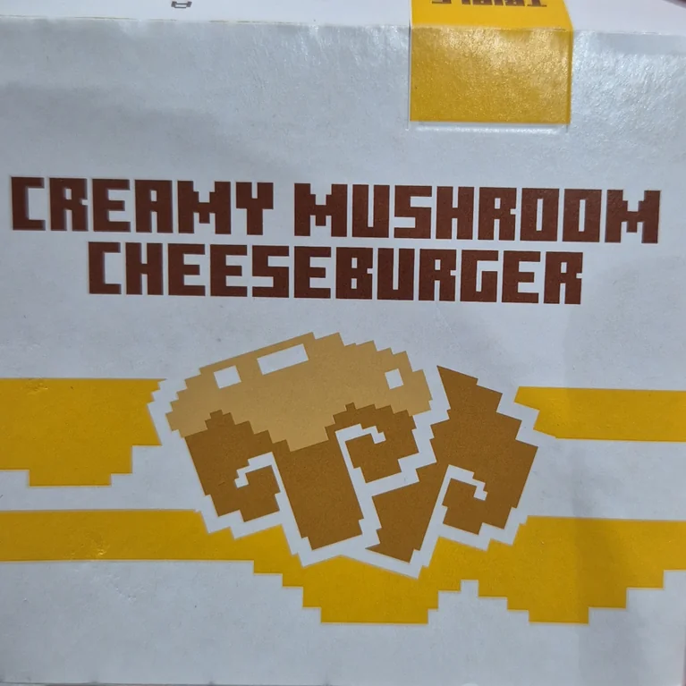

My fascination with mixels
This title might seem off if you ever worked on pixel-art before. Mixels are one of the fundamental mistakes you should always avoid. They are the bane of your art and god forbid you post anything with them on r/pixelart. They ruin everything and only an absolute amateur could ever commit the sin of including them in their art. Are you really gonna trust reddit tough?
But I'd like a definition before I decide!
Definition you say… Well that’s much bigger of an ask than you probably realise. There really isn't one universal definition for them. It's kind of a vibe thing as people vary on how strict they are with what counts as a mixel. As such I'll do my best to explain what they mean to me and most others here, but don’t expect everyone to agree.
In their strictest and simplest definition, mixels are pixels of different sizes combined together. It can happen within one image, sprite or due to different elements on video game screen clashing despite each sprite being consistent.
I’ve also seen people use the term to refer to pixels that don’t comfort a proper pixel grid, or pixels that have different rotations. Though some others might disagree with that. Especially when it comes to videogames, pixels not being aligned on a perfect grid would be referred to as game being or not being pixel perfect.
You most commonly see them from people just starting off with pixel-art. Sometimes they’ll be using pixel brush on a big canvas or maybe combine weird scales of art in their game. Other times they might scale it improperly. There are many pitfalls that can lead to the dreaded mixels.
As a quick example, here is how mixels looked on the packaging from mcdonald's during their collaboration with the minecraft movie.
Or this example of using different size of pixels within one sprite without any care for how the final result might look.

Sounds to me like reddit was right.
The description might not have painted them in the best of lights, but there is still a time and place for them. Double so in video games.
This might be surprising given all that I just wrote here, but it is indeed true. You might not have even realized, but they even appear in industry giants like minecraft or beloved indie titles such as terraria and stardew valley to name a few.
As for art, throughout my time enjoying pixel-art I’ve seen only a few artists who utilized them on the regular. Which is quite a shame and also a reason I set out to write this little post of mine.
While it’s easy for them to end up being an eyesore, there are plenty of use cases where mixels might look better and serve to improve your artwork. It’s all about knowing when to use them.
So, how could one use them?
The most common use case for mixels I have come across is for various visual effects within your art. Be it love hearts, be it angry sign or a sweat drop on side of characters head or dust picking up after a slide. Having these effects be of lower resolution can help separate them from the rest of the image and enhance the pixelated feel. They can make the art feel more playful, more retro or give it a more video-gamy feel.
Let’s lead with an example. Let’s say I want to add heart symbols into this piece.
I could just draw them the proper way to end up with image looking like this:
There is nothing wrong with this, but with some hearts having such a big size / resolution, they don't feel very pixel-arty. There is nothing wrong with this, but it feels a bit off compared to a clearly pixel-art character.
To solve this, I could draw a smaller sprite of a heart and scale it up for use within this drawing.

This is all of course highly subjective, but the more pixelated style of the icons makes them more separated from the rest of the image and helps to maintain more pixel-art vibe
Does this rambling have conclusion?
Conclusion? Mixels are great!
Somewhat. What I am trying to say is that even the most basic rules often have exceptions. While it's important to understand the rules and know to adhere to them, it's almost as important to understand when and how to break them to elevate your art. I hope this article was able to convince you that there are times to break even some of the most basic rules and that it doesn't automatically devaluate your art.
And who knows, maybe you will too find the beauty of mixels and become as obsessed with them as I did.